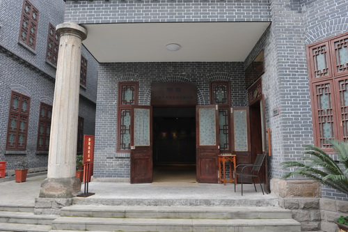

特园中国民主党派历史陈列馆（重庆）

陈列馆外景
抗日战争时期，许多影响历史进程的重大事件发生在重庆，留下了极为珍贵的统战文化遗址。其中，全国重点文物保护单位——特园，就是著名的文物遗址之一。特园是著名爱国民主人士鲜英的公馆，有着“民主之家”美誉，是以周恩来为首的中共中央南方局贯彻党的抗日民族统一战线政策的重要场所，是抗战时期民主党派开展重大政治活动的历史见证，是中国民主同盟和“三民主义同志联合会”的诞生地。1945年，重庆谈判期间，毛泽东四顾特园，与爱国民主人士共商国是。特园留下了各民主党派、各界爱国人士在抗日民族统一战线的旗帜下团结合作、共御外侮的光辉历史，见证了中国共产党始终以中华民族利益为重、巩固和发展最广泛的爱国统一战线的生动实践，见证了民族危亡之际的全民族大团结、大联合，见证了以爱国主义为核心的民族精神。
中国民主党派历史陈列馆位于重庆市渝中区上清寺嘉陵桥东村35号。2004年3月，鉴于我国现有的8个民主党派中的中国民主同盟、中国民主建国会、九三学社和民革前身之一的“三民主义同志联合会”都发祥于重庆，中央统战部在重庆设立全国首个“中国统一战线传统教育基地”。2008年5月，经中央统战部批准，重庆市委、市政府修复特园遗址，以此为依托建立特园中国民主党派历史陈列馆。2011年3月，扩建工程完工并更名为中国民主党派历史陈列馆正式对外开放。2012年12月，成功创建全国统战系统唯一的国家一级博物馆。2013年2月，被评为国家4A级旅游景区。2013年1月，市委编办同意陈列馆设立为独立法人机构，为市委统战部管理的公益一类、财政全额拨款处级事业单位，设有办公室、研究室、社会教育部、安全保卫部4个部室，其综合功能作用是宣传、教育、培训、研究。
陈列馆建筑面积12000余平方米，由序厅、中国国民党革命委员会、中国民主同盟、中国民主建国会、中国民主促进会、中国农工民主党、中国致公党、九三学社、台湾民主自治同盟、全国工商联、无党派人士和特园康庄复原陈列等12个展区组成，是全国唯一一座全面反映中国共产党领导的多党合作和政治协商制度发展光辉历程的专题博物馆。开馆以来，共接待国内外观众497万人次，其中接待正国级领导4人次、副国级以上领导34人次、省部级领导416人次，承接系统内外现场教学和参观团队共计4500多个，接待台湾、香港等地境外参观团队200余批，在开展爱国主义教育和弘扬统战历史文化方面承担着重要作用。
中国民主促进会历史陈列展位于陈列馆三楼，展线长度约200米，展厅面积500平方米左右，陈列有马叙伦、周建人、叶圣陶、冰心、赵朴初等民进先贤留下的文物，同时陈列有体现民进光荣历史的各种档案、报纸、图书、音像视频等。2008年以来，严隽琪、罗富和、刘新成等历届民进中央领导同志曾到馆参观考察，全国民进各级组织也大量组队前来参观学习。